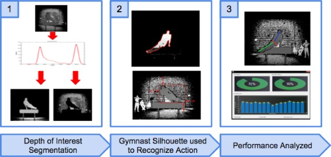

-
Engineers develop robots that are able to do dangerous jobs
"Every day it seems, robots acquire new capabilities. The robotics field continues to evolve rapidly. Now, robots are starting to go underground to explore mines, caves and tunnels that can be pretty dangerous to humans."
Working together with Dr. Andrew Petruska, we are developing a team of autonomous, collaborative unmanned ground vehicles (UGVs) and unmanned aerial vehicles (UAVs) for underground reconnaissance. This research was reported by CGTN AMERICA in July 2018.
-
Robots might help prevent toxic mine spills
"Crumbling mine tunnels awash with polluted waters perforate the Colorado mountains, and scientists may one day send robots creeping through the pitch-black passages to study the mysterious currents that sometimes burst to the surface with devastating effects."
Collaborate with Environmental Protection Agency (EPA), our research on abandoned mine reconnaissance was reported initially by the Associated Press in January 2018, and then reposted by the Denver Post, Fox News, Science News, and many others.
-

Needs a caption? Needs a citation? Needs to be a different image?
Mines develops app to track gymnasts' performance data
Collaborating with the United States Olympic Committee (USOC), our team (PhD student Brian Reily, Dr. William Hoff, and Dr. Hao Zhang) developed a software that uses a color-depth camera to automate the analysis and scoring of gymnasts movements. This research was featured by the Mines Newsroom in August 2015.